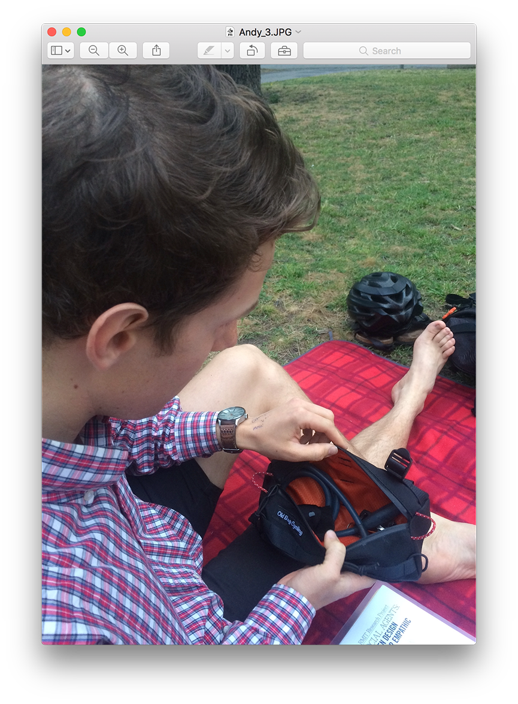
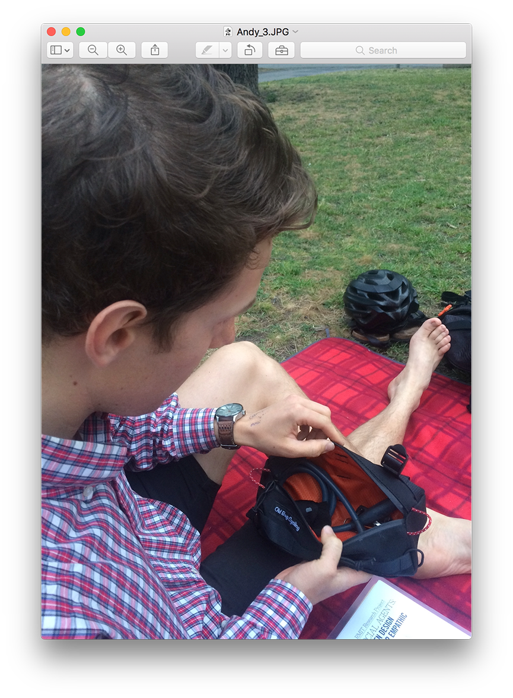

Alex and Andrew’s task was to choose an object from their partner’s belongings, that they appreciate.
Alex
The object I choose of Andy’s was his bike. 🚴 This is a good one; him and his dad [showing photo above]. Your dad got you into bike riding? Yeah, they do that together.
CX stands for ‘cyclocross’, it means, yeah, you can ride it on road or offroad essentially.
There were a few bikes of Andy’s to choose from, but I think this is his favourite one – it’s definitely more adventurous... Family adventures. We do stuff together. We were going out on the bikes today, but it rained. Soon 😃
Andrew
So I guess I chose this object… because… well one reason is that I bought it for you. I chose it for you because I thought it was cool. It’s a very practical item – a little bag in the front of your bike so you can store your little bits and pieces in there. Like your little glovies. And your keys. It’s from a Melbourne based.. bag-maker, I guess. He makes adventure gearing, now he calls himself Overland Gear Australia. I wanted one, but instead of buying one for me, I bought one for you. It’s been stuck on the front of your bike.. since you got it, pretty much. So you seem to like it.

Yeah, I think it looks cool. I think it’s called a ‘burrito bag’.. so your nickname was burrito-Pete for a time there. So, a little – a little burrito 🌯😃
 

The inside is nice and orange, which matches your bike as it turns out. But it also makes it a lot easier to find things inside the bag. So it was well thought out.